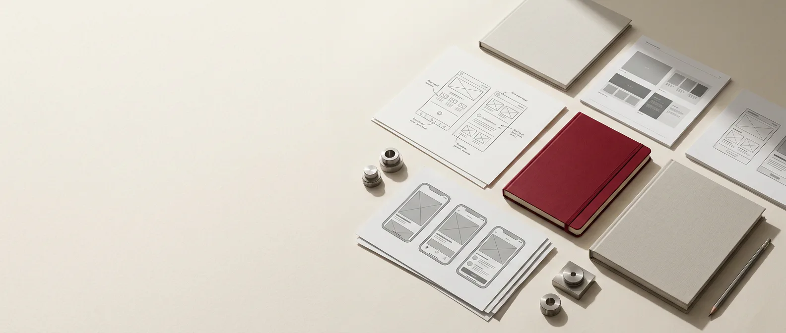

Hi, I’m Kamalish
An aspiring product manager at IIT Madras, working at the intersection of product strategy, user experience, and visual storytelling.

Product strategy
Requirements, roadmaps & metrics
UX & flows
Research translated into clarity
GTM thinking
Markets, positioning & growth
Visual craft
Decks and systems that communicate
Selected work across product and visual design.

Work experience
Product delivery, user experience, and creative leadership across SaaS, design, and large-scale student organizations.
Skills
Product Manager
Desk365
May 2026 — Jul 2026
Led delivery across Audit Logs, Multiple Support Portals, and Empty State UX—from requirements and user stories through cross-functional release coordination.
Skills
PRDs · Jira · Product delivery · Cross-functional collaboration
UI/UX Intern
Hextasy.in
May 2025 — Jul 2025
Translated user needs and business goals into user flows, wireframes, prototypes, and scalable product experiences in partnership with developers and stakeholders.
Skills
Figma · Wireframing · Prototyping · UX research
Creatives & Design Core
Shaastra, IIT Madras
Mar 2025 — Feb 2026
Led a four-tier creative team of 80+ students, trained 40+ coordinators, managed a ₹3L+ budget, and helped grow the festival’s social reach through design-led campaigns.
Skills
Creative leadership · Campaign strategy · Team management · Visual design